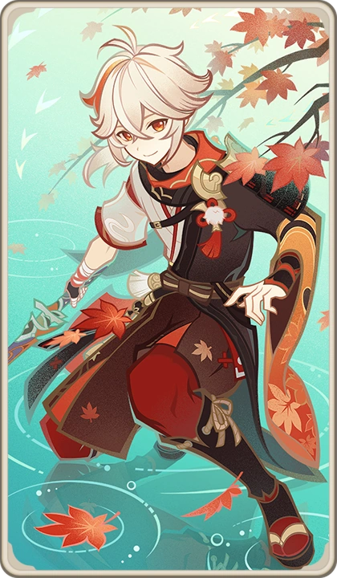
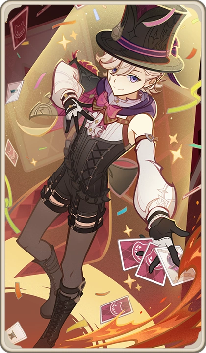

My Top 5 Genshin Characters
| Character Card | Name | Description | Region | Element |
|---|---|---|---|---|
 |
Nahida | Lesser Lord Kusanali, also known by her Goetic name Buer and as Nahida, is the God of Wisdom and the current Dendro Archon presiding over Sumeru. The youngest of The Seven, she was created from the purest branch of Irminsul by the previous Dendro Archon, Greater Lord Rukkhadevata, to be her successor. | Sumeru | Dendro |


|
Traveler | The Traveler is the playable protagonist of Genshin Impact<. In the opening cutscene, twin siblings from another world travel through the universe, until an unknown god blocks their path. The player gets to choose either Lumine (female) or Aether (male) as the traveler and the Traveler's Sibling becomes captured. | Unknown | Depends |
|  | Kazuha | A wandering samurai of the once-famed Kaedehara Clan with an ability to read the sounds of nature, Kazuha is a temporary crewmember of The Crux. Despite being burdened by the many happenings of his past, Kazuha still maintains an easygoing disposition. | Inazuma | Anemo |
|  | Lyney | Skilled and eloquent, Lyney is Fontaine's Great Magician and Lynette's twin brother. After their parents' death and having been saved from an abusive noble by their "Father," Lyney has undertaken missions for the House of the Hearth and has said that he will eventually become the successor of "Father." | Fontaine | Pyro |
 |
Collei | Originally an Eleazar-afflicted victim of Fatui human experimentation, Collei wandered the world as a vagrant until she met Amber in Mondstadt. Since then, Collei has turned her life around, and currently serves as a trainee Forest Ranger in the Avidya Forest. | Sumeru | Dendro |